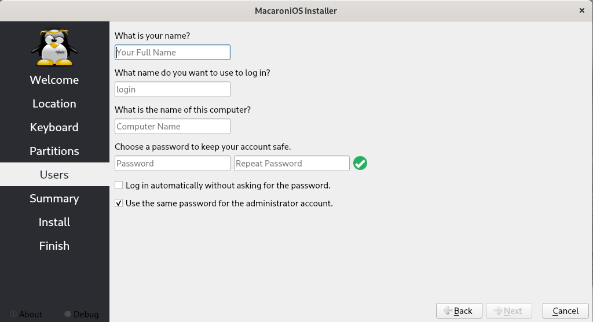

Getting Started #
Install Macaroni ISO #
Choose the right ISO for your requirements from our Download page.
1.Validate downloaded ISO #
After the you have downloaded the ISOs file, I suggest to verify the quality of the download with our SHA256 hash:
$ sha256sum Macaroni-Funtoo-Phoenix-Gnome-23.03.02.iso
8637d8c6ba72f8694aabd631f038473acaadd0fbb8fc9fa7cec7bb0d495f1f54 Macaroni-Funtoo-Phoenix-Gnome-23.03.02.iso
$ cat Macaroni-Funtoo-Phoenix-Gnome-23.03.02.iso.sha256
8637d8c6ba72f8694aabd631f038473acaadd0fbb8fc9fa7cec7bb0d495f1f54
If the download is correct the hash will be the same.
2.Flash your USB drive #
To write an ISO there are different tools and ways. My suggestion is to use the wonderful tool Balena Etcher ( Github) that validates the written bytes before sharing the result.
NOTE: At the moment the ventoy USB Solution is not supported.
3.Check your BIOS #
At the moment, the Macaroni ISOs don’t support an EFI-signed bootstrap. So, before bootstrapping your USB drive just check and disable EFI security check.
Hereinafter is an example of how to setup the right options:
Normally, based on device there are different ways to enter the BIOS or EUFI setup,
with F10, Canc, F2. You need to check your device manual.
4.Boot the ISO #
When the Menu is visible could be possible customize boot options with
E keyboard button. After push to E keyboard button compares in the foot
the default command line options where you can add every kernel options.
Disable Nouveau driver #
By default we prefer using nouveau driver for the NVIDIA cards on bootstrap our live ISOs. But it’s possible that some new cards could be not yet supported.
To force the loading of the NVIDIA kernel module you can add this option:
modprobe.blacklist=nouveau
Enter in the ISO bootstrap shell #
If there are issues with bootstrap on the Macaroni ISOs you can enter in the initrd shell in order to recover informations about your system and help us to check what happens.
To enter in the shell before the probing of the ISO squashfs to debug
the probing phase and the switch root command you need to add shell=1 as
option.
ISOLinux bootstrap #
At the moment the options described above are not available in the ISOLinux menu, visible hereinafter:
The ISOLinux menu normally is available for non-EFI systems.
5. Start Installer #
All our ISOs are configured with Network Manager by default which is better integrated with the Calamares installer. You are free to disable and change it later when the system is installed.
The default user of Macaroni ISO is macaroni with password macaroni.
Server ISO #
The Server ISO automatically starts an X server with Calamares without a Desktop Environment.
The X server available with the Server ISO is limited. If you don’t have
a network with DHCP you can change the tty and using nmtui to setup
Networking correctly.
XFCE ISO #
To start the Macaroni Installer click on Install System from Applications → System → Install System.
Gnome ISO #
To start the Macaroni installer you need to enter on Applications dashboard and search for install:

6. Follow Installer workflow #
6.1 Welcome: Select Language #
In this page if the installer detects correctly at least one hard drive is present the first choice of the user: the select of the language.
At the moment the tested languages are English and Italianx but other languages are available. If you find some problem with the other languages open an issue.
6.2 Location: Select Region and Zone #
The second page of the installer permits you to configure the Region and the timezone.
Choose the right value from the map and go ahead.
6.3 Keyboard: Select Keyboard Model and Language #
The third page of the installer permits you to configure the Keyboard Model and the langauge.
6.4 Partitions: Select storage device and Partitions #
In this page you need to select the storage device from the menu and choose how the installer will prepare the partitions.
If the selected disk is empty the installer will propose only two choices: Erase disk and Manual partitioning.
If you wish to reinstall Macaroni OS to an existing system and/or replace existing partitions you can select the option Replace a partition:
If you are a newbie, my suggestion is to use the self partitioning mode from the Macaroni Installer that automatically define three main parititions: efi boot (if you are in EFI env), Swap partition and a Root partition for all data.
Encrypt Full Disk #
Macaroni supports Encryption of full system, the only partition left in clear-text is the EFI partition.
To enable the encryption you need to flag Encrypt system and write the passphrase as visible in the screenshot hereinafter:
With the option Encrypt System also the swap partition will be encrypted. The passphrase will be asked on GRUB before printing the Menu.
Manual Partitioning #
An expert user could create their custom installation with different partitions, for example, to divide /var/ from /,
etc.
Encrypt Home Partition Only #
Personally, I think that could be a good compromise to have the rootfs without encryption, this makes things easier
on restoring a broken system and only encrypt the home with user data.
This is possible from Manual Partioning on creating an encrypted partition.

To enable this it’s only needed after selecting the File System type (in the screenshot ext4), to set the Encrypt flag and set the passphrase.
NOTE: On setup, in a configuration with single partitions encrypted you need to do some manual operations when the installation is completed or at the first boot. Unfortunately, at the moment the configuration of a single encrypted partition is not handled correctly and automatically by the Calamares installer. So, these steps will be described later.
6.5 Users: Define User and Passwords #
It’s now time to define the user of your system, write your name and the name of your computer and choose your password.

Normally, the defined user will be the admin user and the same password will be
used for root. If you want a different password for root, you need to disable the
flag related to the option: Use the same password for the administrator account.
6.6 Summary: Show configured options #
At this point, you are near to starting the installation of your Macaroni OS system.
Just check the selected options before starting the installation.
If all is ok, go ahead with the Install button.
6.7 Install: The Installation is started #
Finally, the Macaroni Installer begins to write your hard drive. The time needed depends on your hardware and the speed of the hard drive.
6.8 Finish: The Installation is completed #
Wohoo! Your Macaroni system is ready!
Set the Restart now flag to reboot your computer and to start your Macaroni OS.
6.9 The First boot #
Full Encrypted Disk #
If you have chosen to encrypt the full disk on bootstrap then GRUB will ask for the passphrase inserted in installation phase before displaying the GRUB menu and going ahead with the bootstrap of your system.
Hereinafter, an example of what that could look like:
Complete the setup of Home’s encrypted partition #
If you have encrypted only the home partition or any other partition with the workflow described before, you need to execute a few steps to have the installation working correctly .
a. Retrieve the LUKS filesystem Id
# cat /etc/fstab
# /etc/fstab: static file system information.
#
# Use 'blkid' to print the universally unique identifier for a device; this may
# be used with UUID= as a more robust way to name devices that works even if
# disks are added and removed. See fstab(5).
#
# <file system> <mount point> <type> <options> <dump> <pass>
UUID=ABF5-91D0 /boot/efi vfat defaults,noatime 0 2
UUID=f202c1d1-b131-45f5-8973-8f82cb63d688 / ext4 defaults,noatime 0 1
/dev/mapper/luks-f1504aa0-2594-4221-b741-7ba315b47de0 /home ext4 defaults,noatime 0 2
In this case the needed value is f1504aa0-2594-4221-b741-7ba315b47de0.
b. Editing the GRUB configuration file /etc/default/grub and add this option:
GRUB_CMDLINE_LINUX="rd.luks.uuid=f1504aa0-2594-4221-b741-7ba315b47de0"
Where it’s used the LUKS filesystem ID with the option rd.luks.uuid that
says to dracut to manage the prompt on Plymouth for uncrypt the home partition
before starting X.
c. Rebuild the initramfs image with macaronictl
$> macaronictl kernel gi --all --grub
Creating initrd image /boot/initramfs-vanilla-x86_64-6.1.18-macaroni...DONE
Creating grub config file /boot/grub/grub.cfg...
Generating grub configuration file ...
Found linux image: /boot/kernel-vanilla-x86_64-6.1.18-macaroni
Found initrd image: /boot/initramfs-vanilla-x86_64-6.1.18-macaroni
fgrep: warning: fgrep is obsolescent; using /bin/grep -F
WARNING: Failed to connect to lvmetad. Falling back to device scanning.
done
d. Check dmcrypt service
Ensure that the dmcrypt service is enabled on boot runlevel:
$> rc-update show
NetworkManager | default
avahi-daemon | default
binfmt | boot
bluetooth | default
bootmisc | boot
cgroups | sysinit
dbus | boot
devfs | sysinit
device-mapper | sysinit
dmcrypt | boot
...
Enable it if it’s not already with:
$> rc-update add dmcrypt boot
e. Reboot your system.
If all is been configured correctly on bootstrap you will see the Plymouth page with the prompt where you insert the passphrase to mount home partition:
NOTE: Installing Macaroni OS with Xorg on MacOS Sonoma 14.0 in a Virtual Machine with VMware Fusion 12.2.3 seems to have an issue with the mouse setup. The same issue is also present using VMware Workstation 16. The problem seems related to the vmmouse driver. Forcing using evdev driver fixes the problem. Hereinafter, is an example of a possible solution:
$> mkdir -p /etc/X11/xorg.conf.d/
$> echo '
Section "InputClass"
Identifier "vmmouse"
MatchIsPointer "on"
MatchTag "vmmouse"
Driver "evdev"
EndSection
' > /etc/X11/xorg.conf.d/50-vmmouse.conf
$> /etc/init.d/xdm restart
Install Macaroni LXD/Incus Containers #
Macaroni OS supplies LXD/Incus images over a Simplestreams Server with help of the simplestreams-builder tool.
To configure your LXD system to download Macaroni OS images you need to add the macaroni remote:
$> lxc remote add macaroni https://macaronios.mirror.garr.it/images/lxd-images --protocol simplestreams --public
Our Simplestreams Server works correctly with both LXD and Incus, so you can add the remote
with incus too:
$> incus remote add macaroni https://macaronios.mirror.garr.it/images/lxd-images --protocol simplestreams --public
The images are visible with the command:
$> lxc image list macaroni:
$> # or
$> incus image list macaroni:
Install Macaroni Incus Containers #
Macaroni OS supply their Incus images over a Simplestreams Server with help of the simplestreams-builder tool.
To configure your Incus system to download Macaroni OS images you need to add the macaroni remote:
$> incus remote add macaroni https://macaronios.mirror.garr.it/images/lxd-images --protocol simplestreams --public
The images are visible with the command:
$> incus image list macaroni:
Install Macaroni Docker Containers #
The official Docker Hub user is macaronios.
To play with Macaroni just create your container:
$> docker run --rm -ti macaronios/terragon-minimal:latest-amd64
And then install your packages:
e9c4457e2ce7 / # luet repo update
üè† Repository: mottainai-stable Revision: 85 - 2023-04-06 21:04:23 +0000 UTC
üè† Repository: geaaru-repo-index Revision: 5 - 2023-03-18 10:12:28 +0000 UTC
üè† Repository: macaroni-commons Revision: 137 - 2023-03-19 11:49:39 +0000 UTC
üè† Repository: macaroni-terragon Revision: 176 - 2023-04-01 08:45:41 +0000 UTC
e9c4457e2ce7 / # luet i vim vim-core htop
üöÄ Luet 0.34.2-geaaru-g39b17f43958ab2df8c20f19410df612640428708 2023-03-15 06:03:31 UTC - go1.20.1
üè† Repository: geaaru-repo-index Revision: 5 - 2023-03-18 10:12:28 +0000 UTC
üè† Repository: macaroni-commons Revision: 137 - 2023-03-19 11:49:39 +0000 UTC
üè† Repository: macaroni-terragon Revision: 176 - 2023-04-01 08:45:41 +0000 UTC
üè† Repository: mottainai-stable Revision: 85 - 2023-04-06 21:04:23 +0000 UTC
ü߆ Solving install tree...
üç¶ [ 1 of 22] [N] app-admin/eselect::macaroni-terragon - 1.4.14+1
üç¶ [ 2 of 22] [N] app-arch/xz-utils::macaroni-terragon - 5.4.2
üç¶ [ 3 of 22] [N] app-editors/vim::macaroni-terragon - 9.0.1425
üç¶ [ 4 of 22] [N] app-editors/vim-core::macaroni-terragon - 9.0.1425
üç¶ [ 5 of 22] [N] app-eselect/eselect-vi::macaroni-terragon - 1.1.9
üç¶ [ 6 of 22] [N] app-misc/mime-types::macaroni-terragon - 9
üç¶ [ 7 of 22] [N] dev-db-3/sqlite::macaroni-terragon - 3.41.2
üç¶ [ 8 of 22] [N] dev-lang-2/python-exec::macaroni-terragon - 2.4.6
üç¶ [ 9 of 22] [N] dev-lang-3.9/python::macaroni-terragon - 3.9.16
üç¶ [ 10 of 22] [N] dev-libs-3/libnl::macaroni-terragon - 3.4.0
üç¶ [ 11 of 22] [N] dev-libs/libffi::macaroni-terragon - 3.3
üç¶ [ 12 of 22] [N] dev-libs/openssl::macaroni-terragon - 1.1.1q
üç¶ [ 13 of 22] [N] dev-python/setuptools::macaroni-terragon - 67.6.1
üç¶ [ 14 of 22] [N] dev-util/cscope::macaroni-terragon - 15.9
üç¶ [ 15 of 22] [N] sys-apps/file::macaroni-terragon - 5.44+1
üç¶ [ 16 of 22] [N] sys-apps/util-linux::macaroni-terragon - 2.38.1+1
üç¶ [ 17 of 22] [N] sys-libs/gdbm::macaroni-terragon - 1.23
üç¶ [ 18 of 22] [N] sys-libs/gpm::macaroni-terragon - 1.20.7
üç¶ [ 19 of 22] [N] sys-libs/libcap-ng::macaroni-terragon - 0.7.9+2
üç¶ [ 20 of 22] [N] sys-libs/libunwind::macaroni-terragon - 1.6.2
üç¶ [ 21 of 22] [N] sys-process/htop::macaroni-terragon - 3.2.2
üç¶ [ 22 of 22] [N] virtual/libc::macaroni-terragon - 1
üíÇ Checking for file conflicts...
✔️ No conflicts found (executed in 820170 µs).
Do you want to continue with this operation? [y/N]:
Hereinafter, the list of the official Macaroni Docker images available:
| Image | Release | Description |
|---|---|---|
| macaronios/phoenix-minimal | Phoenix | The minimal image of the Phoenix release without subets. |
| macaronios/phoenix-minimal-devel | Phoenix | The minimal image of the Phoenix release with portage and devel subsets. |
| macaronios/phoenix-testing-minimal | Phoenix | The minimal image of the Phoenix release with testing repositories. |
| macaronios/phoenix-dev-minimal | Phoenix | The minimal image of the Phoenix release with develop repositories. |
| macaronios/eagle-minimal | Eagle | The minimal image of the Eagle release without subsets. |
| macaronios/eagle-minimal-devel | Eagle | The minimal image of the Eagle release with portage and devel subsets. |
| macaronios/eagle-testing-minimal | Eagle | The minimal image of the Eagle release with testing repositories. |
| macaronios/eagle-dev-minimal | Eagle | The minimal image of the Eagle release with develop repositories. |
| macaronios/eagle-dev-minimal-devel | Eagle | The minimal image of the Eagle release with develop repositories and with portage and devel subsets. |
| macaronios/terragon-minimal | Terragon | The minimal image of the Terragon release without subsets. |
| macaronios/terragon-minimal-devel | Terragon | The minimal image of the Terragon release with portage and devel subsets. |
| macaronios/terragon-dev-minimal | Terragon | The minimal image of the Terragon release with develop repositories. |